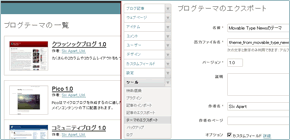
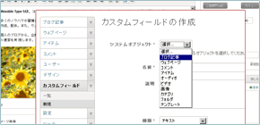
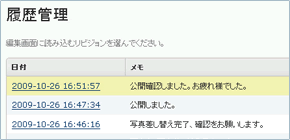

Movable Type 5 は、ブログだけではなく、ウェブサイト単位でのウェブページやファイルの管理、更新履歴の保存など、CMS（コンテンツ管理システム）としての基盤を進化させた、パブリッシング・プラットフォームです。

ウェブサイトをデザインするテンプレートや、カスタムフィールド、カテゴリーなどを、まとめて『テーマ』として保存、配布が可能です。

ブログ記事や、ウェブページの投稿画面に、独自の入力項目を追加。カテゴリーに連動した、項目の表示設定が可能です。

ブログ記事や、ウェブページ、テンプレートを、いつ、誰が、どのような変更を加えたのかが一目でわかります。
法人や個人事業者でのご利用の場合はブログの内容に関わらず有償ライセンスが必要です。MT5ライセンスをご購入頂ければ、MT4をダウンロードしてご利用頂けます。
エンタープライズ・ビジネス向けに、Oracle、MS SQL対応、LDAP連携、グループ＆ロール機能、ユーザー管理機能の拡張、ワークフロー機能、ブログポータル機能等を搭載したライセンスです。
個人ライセンスとは、個人名義でダウンロードされ、個人所有のサーバーやレンタルサーバーで個人的な日記等を書くためのライセンスです。（企業や商用サイトで試用することはできません）
| 日付 | ニュース |
|---|---|
| 重要 セキュリティアップデート Movable Type 5.01 および 4.27の提供を開始 | |
| KDDIウェブコミュニケーションズのホスティングサービス「CPI」がMovable Type 5 に対応 | |
| 年末年始の Movable Type ユーザーサポートについてのお知らせ |
| 日付 | セミナー |
|---|---|
| シックス・アパート 次世代ウェブサイトマネジメントプラットフォーム「Power CMS for MT 2」体感 セミナー | |
| ProNet 初心者の為のビジネスブログ入門セミナー | |
| ProNet MT使い方講座（3コース） |
Movable TypeやTypePadなど、シックス・アパートの製品で構築されたビジネスブログ、イントラブログの構築事例をご紹介しています。
六本木ヒルズや表参道ヒルズなどの建設・運営で有名な総合ディベロッパーの森ビルは、2008年8月に企業ウェブサイトのリニューアルを行った。新サイトは、最新トピックスを既存のプレスリリースとは異なるアプローチで掲載するなど、一般の利用者を意識した積極的な情報発信が目を引く。